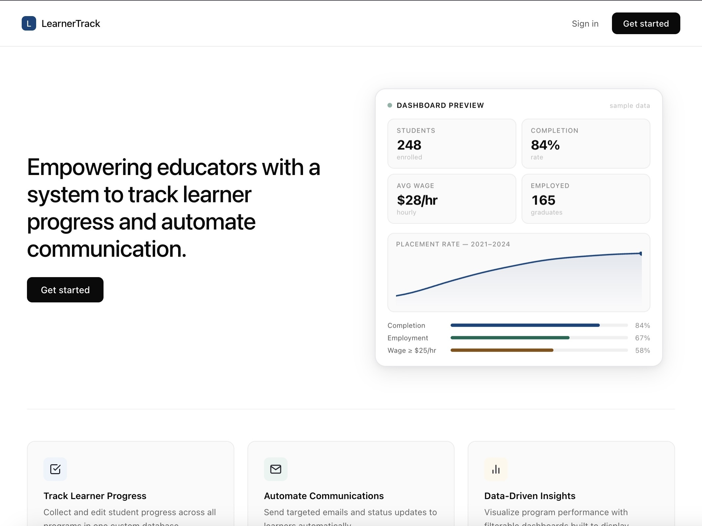
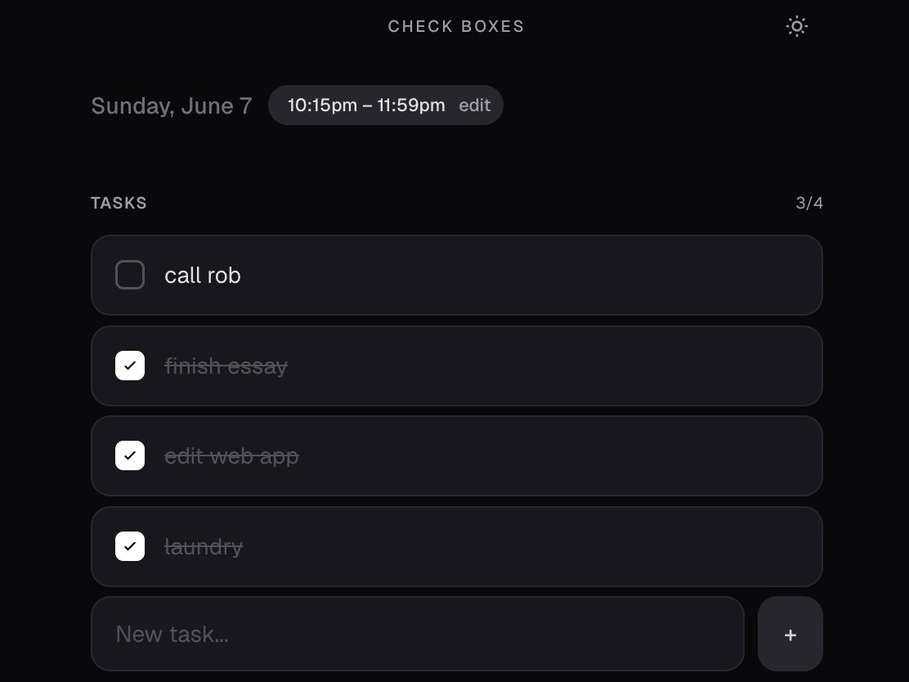
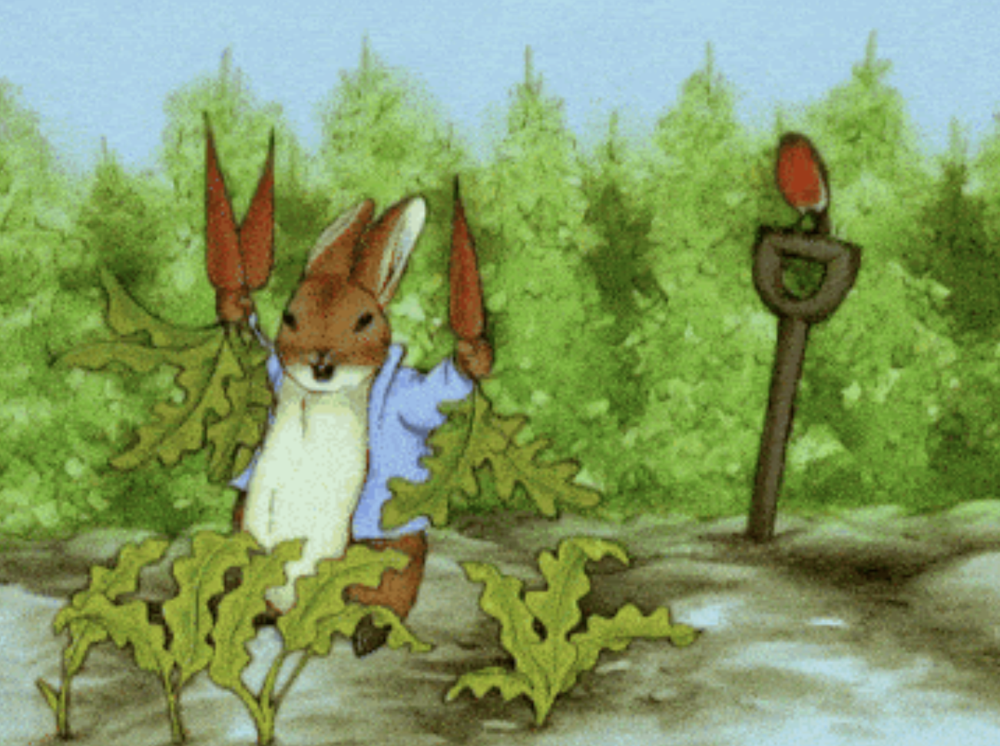

sharing things as i build them here—projects are also on GitHub.
LearnerTrack
Learner Management System

- Developed a full-stack web app for a workforce-empowerment initiative through a selective Northwestern student software consulting program, collaborating on a 6-person team and serving as PM and primary client liaison.
- Built an end-to-end learner management system in React + Node/Express (Supabase/PostgreSQL) enabling admins to manage student enrollment, track employment outcomes, and visualize program KPIs via an analytics dashboard.
- Closed a critical security gap by adding Firebase Admin SDK middleware to previously unprotected admin routes; shipped automated milestone emails and role-based program tab viewing controlled via Firebase.
- Currently extending the platform to support dynamic program creation, replacing two hardcoded programs with a fully configurable system open to any admin.
Check Boxes
Daily Productivity App

- Built as a daily self-calibration tool — users set and work through a task list, working to improve their historic execution rate (average percentage of tasks completed per day) over time.
- Built with Next.js 15 (App Router), TypeScript, and Tailwind CSS v4, with localStorage persistence keyed by date so state resets automatically each day.
- Implemented a FLIP animation system using flushSync and the Web Animations API — completed tasks squish, glide to the bottom of the list, and push remaining tasks upward with a momentum-style bob.
- Custom dual-handle range slider built from scratch using the Pointer Events API; confetti burst via Web Animations API fires when task progress crosses the prediction marker.
- Includes dark mode toggle, responsive layout, end-of-day summary popup, and a first-time visitor onboarding modal.
- Deployed June 7, 2026.
Personal Website
Portfolio Site

- Built as portfolio to showcase my interests and projects.
- Responsive layout using Flexbox and CSS Grid, with embedded YouTube content, custom Google Fonts, Font Awesome icons, page-load animations, a fixed gradient overlay, and interactive project cards with hover effects.
- Implemented semantic HTML for accessibility and structure, along with responsive CSS design patterns, animations, and Git-based version control with deployment to a live domain.
- Recently, I've been using it as an experimentation space for designing and iterating with Claude Code (June 2026)
- Deployed June 24, 2025.
Peter Rabbit Writing Station
AI-Automated Reply System

- Built for a Design Thinking & Communication course at Northwestern as an interactive writing station for children.
- Users submit responses via a Google Form and receive personalized emails generated automatically using Google Apps Script and the OpenAI API (GPT-4o-mini).
- Designed prompt guardrails for tone, safety, and length, and implemented automated email formatting, token tracking, and cost estimation.
- Demonstrates an end-to-end system connecting UI input, backend scripting, and LLM-based generation in a production-like workflow.
- Deployed June 2026.
Checkers in Python
Terminal Game

- Built a fully functional terminal-based Checkers game for a CS 150 project.
- Implemented game logic using object-oriented programming, including class structures for pieces and board state, move validation, turn management, and win-condition detection.
- Designed a complete playable system from scratch without external libraries, focusing on control flow, state management, and OOP architecture.
- Strengthened understanding of software design patterns and structured program logic.
- Created December 10, 2025.
JavaScript Fundamentals
Code Reference

- Built as a structured learning reference for foundational JavaScript concepts and early-stage programming exercises.
- Covers functional programming concepts (functions, recursion, scope, object properties) and object-oriented patterns (classes, constructors, methods, inheritance).
- Includes applied logic projects such as a musician gig-matching algorithm and a simple two-player battle simulation using randomization and class-based design.
- Focused on reinforcing core programming principles through annotated examples and small systems.
- Created July 29, 2025